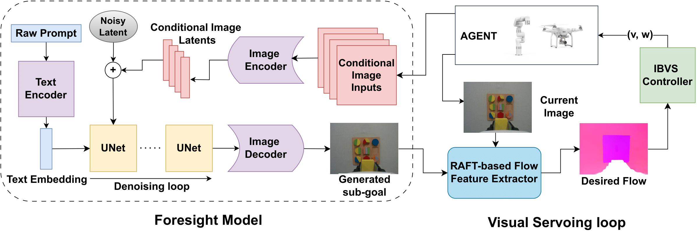
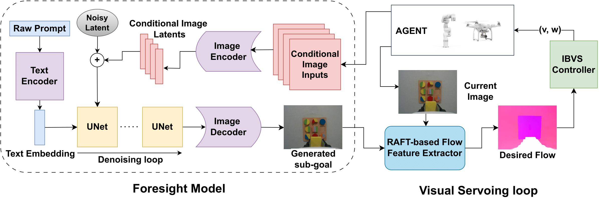

Architecture

Visual servoing, the method of controlling robot motion through feedback from visual sensors, has seen significant advancements with the integration of optical flow-based methods. However, its application remains limited by inherent challenges such as the necessity for a target image at test time, the requirement of substantial overlap between initial and target images, and the reliance on feedback from a single camera. This paper introduces Imagine2Servo, an innovative approach leveraging diffusion-based image editing techniques to enhance visual servoing algorithms by generating intermediate goal images. This methodology allows for the extension of visual servoing applications beyond traditional constraints, enabling tasks like long-range navigation and manipulation without predefined goal images. We propose a pipeline that synthesizes subgoal images grounded in the task at hand, facilitating servoing in scenarios with minimal initial and target image overlap and integrating multi-camera feedback for comprehensive task execution. Our contributions demonstrate a novel application of image generation to robotic control, significantly broadening the capabilities of visual servoing systems. Real-world experiments validate the effectiveness and versatility of the Imagine2Servo4 framework in accomplishing a variety of tasks, marking a notable advancement in the field of visual servoing

Imagine2Servo(Ours)
RTVS
Pose Diffusion
Cam-Axis
Qualitative contrast: Imagine2Servo converges with sub-goal generation, whereas RTVS diverges. Cam-axis and pose-diffusion methods falter in predicting actions to cross an occluded door.
In instances of notable disparities in initial translation and rotation, where the door is scarcely visible, our techniques adeptly model the door to generate sub-goals
Imagine2Servo formulates pertinent sub-goals and designs trajectories to circumnavigate the door safely, avoiding collisions.
We achieve a precise end-effector pose required to unplug the charger.
Our model accurately discerns the object specified in the textual instruction amidst multiple objects within the scene.
Despite obscured visibility of the door handle, our model generates sub-goals and takes relevant actions to accomplish the task.
Our model generates relevant sub-goals and precisely models trajectories to place the hexagon into its shape sorter
Our model accurately discerns the color and shape specified in the text prompt, even amidst multiple objects sharing identical color and shape within the scene.